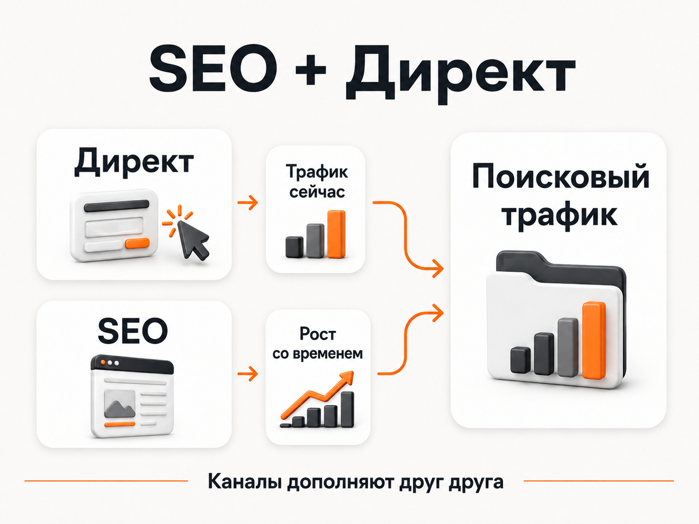

Блог о платном трафике
SEO или контекстная реклама: что выбрать
Если заявки нужны сейчас, я бы начинал с контекстной рекламы. Если задача - постепенно получать поисковый трафик без оплаты каждого перехода и вы готовы вкладываться в сайт на горизонте месяцев, тогда нужно заниматься SEO.
Но само сравнение «SEO или контекстная реклама» немного неправильное. Это два разных инструмента с разной скоростью, логикой и способом оценки результата. В большинстве нормальных проектов я бы не выбирал что-то одно, а использовал оба канала.
В этой статье под контекстной рекламой я в первую очередь имею в виду Яндекс Директ.
Чем SEO отличается от контекстной рекламы
Контекстная реклама покупает доступ к уже существующему спросу. Человек вводит запрос, видит рекламное объявление и может сразу перейти на сайт. Яндекс прямо описывает поисковые объявления как рекламу, которая показывается в ответ на запрос пользователя.
SEO работает иначе. Вы создаете и оптимизируете страницы сайта, после чего поисковый робот должен их обнаружить, проиндексировать, оценить и определить, по каким запросам и на каких позициях их показывать.
Причем сама индексация еще ничего не гарантирует. Яндекс отдельно указывает, что доступная для индексирования страница необязательно будет участвовать в поиске. Google тоже прямо пишет, что соответствие техническим требованиям не гарантирует индексацию и показы.
Если совсем коротко:
| Параметр | Контекстная реклама | SEO |
|---|---|---|
| Скорость | Трафик можно получить практически сразу после запуска | Результат накапливается месяцами |
| Управляемость | Высокая | Значительно ниже |
| Аналитика | Расходы и конверсии хорошо измеряются | Влияние отдельных работ измерить сложнее |
| Оплата | Нужен постоянный рекламный бюджет | За органический клик отдельной оплаты нет |
| Сайт | Обычно достаточно хорошей посадочной страницы | Нужен развитый многостраничный сайт |
| Остановка работ | Остановили рекламу - платный трафик остановился | Накопленная видимость может сохраняться |
| Прогноз результата | Можно достаточно быстро получить реальные данные | Много факторов, длинный цикл проверки гипотез |
Поэтому вопрос обычно должен звучать не «что лучше», а «какой инструмент нужен мне сейчас».

Контекстная реклама дает быстрый и измеримый результат
Главное преимущество Яндекс Директа - скорость обратной связи.
Можно подготовить посадочную страницу, настроить аналитику, запустить рекламную кампанию и начать получать данные. Будут видны расходы, показы, клики, поисковые запросы, конверсии и стоимость обращения.
Дальше уже можно разбираться:
- какие запросы приводят заявки;
- какие объявления работают лучше;
- какая посадочная страница конвертирует;
- сколько стоит лид;
- какого качества приходят обращения;
- превращаются ли они в продажи.
Это не означает, что Директ гарантированно даст дешевые заявки. Иногда после запуска выясняется, что реклама дорогая, сайт плохо конвертирует или предложение не выдерживает конкуренции.
Но вы хотя бы довольно быстро получаете ответ.
Именно за это я ценю контекстную рекламу как инструмент для бизнеса. Вместо нескольких месяцев ожидания появляется фактическая статистика, с которой уже можно работать.
Как оценить эффективность Яндекс Директа: заявки, продажи и окупаемость
С SEO обратная связь намного медленнее
С SEO все гораздо тяжелее именно с точки зрения аналитики.
Допустим, вы сделали новую страницу или написали хорошую статью. Через неделю по ней практически невозможно сделать серьезные выводы.
Сначала поисковая система должна обнаружить страницу. Затем обработать ее. Потом страница начинает участвовать в поиске, меняются позиции, появляются первые показы и переходы.
После этого ситуация продолжает меняться.
Я бы вообще не оценивал новую SEO-страницу по первым неделям. В конкурентной тематике несколько месяцев ожидания совершенно нормальны, а иногда понятную картину можно получить только примерно через полгода или еще позже.
Яндекс подтверждает саму сложность этого процесса: характеристики сайтов регулярно обновляются, алгоритмы меняются, а при формировании поисковой выдачи используется множество факторов ранжирования. Google также говорит о большом количестве систем и сигналов, которые используются для оценки отдельных страниц и сайта в целом.
Из-за этого SEO плохо подходит для быстрых экспериментов.
Сегодня вы изменили заголовок, переписали текст, добавили внутренние ссылки, ускорили страницу и разместили внешнюю ссылку. Через несколько месяцев позиции выросли.
Что именно сработало?
Однозначно ответить обычно невозможно.
Почему эффективность отдельных SEO-работ сложно измерить
В Директе можно посмотреть:
потратили 100 000 рублей -> получили определенное количество переходов -> заявок -> продаж.
В SEO причинно-следственная связь намного длиннее.
На позиции одновременно могут влиять содержание страницы, структура сайта, внутренняя перелинковка, техническое состояние, конкуренты, изменения поисковой выдачи, новые страницы других сайтов, внешние сигналы и обновления алгоритмов.
Даже со ссылками все далеко не так прозрачно.
Можно потратить заметную сумму на несколько хороших размещений, но невозможно открыть отчет и увидеть: «эта ссылка подняла страницу на четыре позиции и принесла 17 дополнительных заявок».
При этом бессистемно покупать ссылки ради манипуляции поисковой выдачей тоже нельзя считать нормальной стратегией. Например, Google прямо относит покупку ссылок для передачи ранжирующего веса к ссылочному спаму.
Поэтому SEO - это скорее работа с системой целиком, чем набор действий, каждому из которых можно точно посчитать окупаемость.
Для контекстной рекламы и SEO я бы делал разные посадочные страницы
Еще одна ошибка - пытаться создать одну страницу, которая одновременно идеально подойдет для Директа и закроет весь SEO-спрос.
Задачи у страниц разные.
Для контекстной рекламы нужен продающий лендинг
В платной рекламе человек уже перешел по конкретному объявлению. Здесь моя задача - максимально коротко провести его от запроса до обращения.
Поэтому под Яндекс Директ я предпочитаю отдельные продающие посадочные страницы.
На них должны быть:
- понятный оффер;
- конкретная услуга или товар;
- нормальный первый экран;
- преимущества;
- доказательства;
- ответы на основные возражения;
- удобная форма заявки;
- понятное следующее действие.
Лишняя информация здесь иногда только мешает.
Что такое лендинг в Яндекс Директе и какой сайт выбрать для рекламы
Примеры продающих сайтов: оффер, доверие и конверсия
Для SEO нужен многостраничный сайт
Для поискового продвижения я бы строил другой фундамент.
Нужен быстрый, технически аккуратный многостраничный сайт с нормальной архитектурой.
Под разные группы спроса создаются релевантные страницы:
- отдельные услуги;
- категории;
- товары;
- направления;
- информационные материалы;
- ответы на узкие вопросы.
Если существует отдельный низкочастотный спрос с самостоятельным намерением пользователя, под него тоже может иметь смысл отдельная страница.
Это не означает, что под каждую перестановку слов нужно создавать новый URL. Страница должна закрывать конкретную потребность пользователя, а не существовать только потому, что в Wordstat нашлась еще одна формулировка.
И Яндекс, и Google требуют гораздо большего, чем простое наличие ключевых слов. Яндекс рекомендует контролировать качество, техническую доступность и индексирование страниц, а Google делает акцент на полезном, надежном контенте для людей и общей удобности страницы.
Поэтому хороший SEO-сайт со временем превращается в большую систему страниц, каждая из которых собирает свой участок поискового спроса.
Почему один лендинг плохо заменяет полноценное SEO
У лендинга ограниченная семантическая емкость.
Допустим, компания занимается ремонтом квартир. Потенциальные клиенты могут искать:
- ремонт квартир;
- ремонт новостройки;
- ремонт ванной;
- ремонт кухни;
- дизайнерский ремонт;
- стоимость ремонта;
- этапы ремонта;
- материалы для ремонта;
- сроки ремонта.
В рекламе часть этих запросов можно направлять на одну хорошо продуманную посадочную страницу.
В SEO намного логичнее разделить спрос между специализированными страницами.
Каждая страница получает собственную тему, структуру, заголовки, текст, внутренние ссылки и возможность полноценно отвечать на конкретный запрос.
За счет этого многостраничный сайт постепенно начинает собирать большое количество запросов, включая низкочастотные.
Именно здесь появляется главное преимущество SEO, которое невозможно нормально реализовать на одном рекламном лендинге.
Что дешевле: SEO или контекстная реклама
SEO часто называют бесплатным трафиком, но это не совсем правильная формулировка.
Поисковая система действительно не списывает деньги за каждый органический переход. Google прямо указывает, что попадание сайта в обычные результаты поиска не требует оплаты поисковой системе.
Но само SEO стоит денег.
Нужны:
- разработка и поддержка сайта;
- техническая оптимизация;
- сбор семантики;
- создание новых страниц;
- тексты;
- изображения;
- внутренняя перелинковка;
- аналитика;
- работа специалиста;
- иногда внешнее продвижение.
Поэтому сравнивать стоимость одного клика из Директа и «бесплатный клик из SEO» неправильно.
В контекстной рекламе расходы видны сразу.
В SEO значительная часть расходов находится в разработке и развитии самого сайта.
На длинной дистанции сильный многостраничный сайт действительно может получать много поискового трафика без оплаты каждого клика. Но чтобы прийти к этому состоянию, сначала придется вложить время и деньги.
Когда лучше начинать с контекстной рекламы
Я бы выбирал Директ первым каналом, если:
- бизнес новый;
- заявки нужны сейчас;
- нужно проверить новую услугу;
- нужно протестировать спрос;
- запускается новая посадочная страница;
- предложение может измениться;
- есть выраженная сезонность;
- результат нужен к конкретному сроку.
Ждать SEO в такой ситуации просто бессмысленно.
Если бизнесу нужны клиенты в сентябре, запускать SEO в августе с расчетом получить нужный объем заявок через месяц - плохой план.
Контекстная реклама для таких задач подходит гораздо лучше.
Стоимость контекстной рекламы: цена, бюджет и расчет расходов
Когда SEO особенно полезно
SEO я бы обязательно развивал там, где существует большой устойчивый поисковый спрос.
Особенно если у бизнеса:
- много товаров или услуг;
- много категорий спроса;
- большое количество информационных запросов;
- длинный цикл выбора;
- есть смысл создавать экспертный контент;
- бизнес рассчитывает работать на рынке много лет.
Здесь каждая новая качественная страница становится еще одной потенциальной точкой входа из поиска.
Одна страница может получать мало трафика. Но если на сайте сотни полезных страниц, суммарный органический трафик уже может стать значимым каналом привлечения клиентов.
Лучший вариант - использовать SEO и контекстную рекламу вместе
На большинстве проектов я бы вообще не ставил вопрос «SEO или контекстная реклама».
Нормальная схема выглядит иначе.
Сначала можно запустить Яндекс Директ и начать получать трафик сейчас.
Реклама дает первые данные:
- что действительно ищут пользователи;
- какие направления востребованы;
- какие предложения получают отклик;
- какие страницы хорошо конвертируют;
- какие запросы приводят реальные заявки.
Параллельно строится SEO.
Создается технически нормальный многостраничный сайт, собирается семантика, формируется структура, постепенно появляются коммерческие и информационные страницы.
Контекст закрывает сегодняшний спрос.
SEO работает на будущий поисковый трафик.
Через несколько месяцев органика начинает добавлять собственные переходы, но это не означает, что Директ обязательно нужно выключать. Если реклама окупается, нет смысла отказываться от дополнительного рабочего источника клиентов.
В итоге сайт получает трафик сразу из нескольких зон поисковой выдачи, а бизнес меньше зависит от одного канала.

Что выбрать в итоге
Если выбирать только один инструмент и заявки нужны в ближайшее время - я бы выбрал контекстную рекламу.
SEO слишком медленное для задачи «нужны клиенты сейчас».
Если бизнес строится надолго, останавливаться только на Директе тоже неправильно. Постепенно нужно создавать сильный многостраничный сайт и развивать органический трафик.
Поэтому для большинства проектов мой вариант выглядит так:
Директ - быстрый источник данных и заявок.
SEO - долгосрочное развитие поискового трафика.
Это не конкурирующие инструменты. Они просто решают разные задачи и работают на разных временных горизонтах.
Источники
- Яндекс Директ: https://yandex.ru/support/direct/ru/general/positions
- Яндекс Вебмастер: https://yandex.ru/support/webmaster/ru/site-indexing/page-indexing-analysis
- Яндекс Вебмастер, ранжирование: https://yandex.ru/support/webmaster/ru/yandex-indexing/rank
- Google Search Central, spam policies: https://developers.google.com/search/docs/essentials/spam-policies
- Google Search Central, Search Essentials: https://developers.google.com/search/docs/essentials